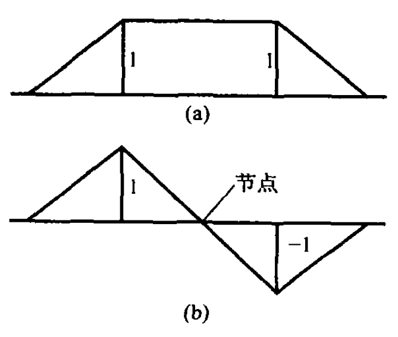
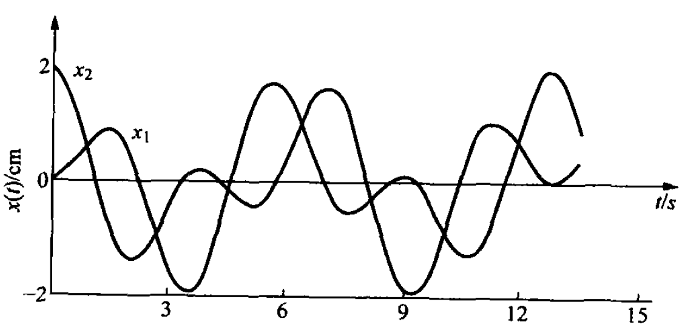
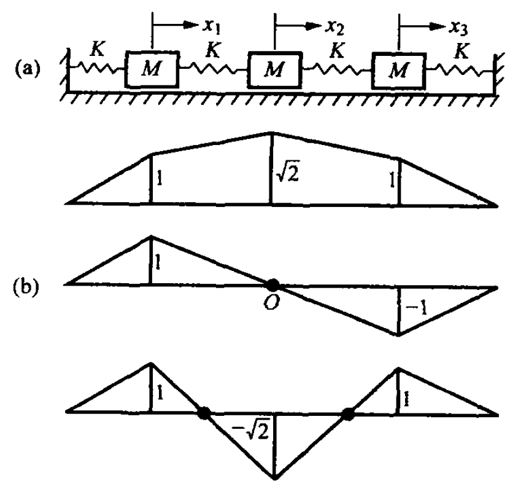

2.2.1. 两自由度系统的自由振动
与单自由度系统一样，建立多自由度系统的运动微分方程式，可以用牛顿-达兰贝尔原理， 即在系统上附加惯性力(力矩)后，按静力学方法建立平衡方程。应用这种方法需要画出质量的受力图，并考虑约束反力。对于自由度数很少的简单系统，这种方法有其方便性。
下面通过举例来说明。

Fig. 2.3 无阻尼两自由度振动系统
Note
例2.1 Fig. 2.3为无阻尼两自由度振动系统，试用达兰贝尔原理建立其运动微分方程式。
解：以静平衡位置为坐标原点，设质量\(M₁\)和\(M_{2} \)的广义坐标为\(x₁\)和\(x₂\), 并假设它们足够小，以保证系统在线性范围内运动。
将\(M₁\)和\(M_{2}\)从系统中分离出来，并将其受到的弹性力和惯性力标于图上，容易得到如下的运动微分方程式。
\[\begin{split}
\begin{array}{l}
M_{1} \ddot{x}_{1}+\left(K_{1}+K_{2}\right) x_{1}-K_{2} x_{2}=0 \\
M_{2} \ddot{x}_{2}-K_{2} x_{1}+\left(K_{2}+K_{3}\right) x_{2}=0
\end{array}
\end{split}\]
例2.1已经得到了无阻尼两自由度系统的运动微分方程式。这是两阶常系数线性齐次常微分方程式组，其更一般的形式为
(2.1)\[
M_{11} \ddot{x}_{1}+M_{12} \ddot{x}_{2}+K_{11} x_{1}+K_{12} x_{2}=0
\]
(2.2)\[
M_{21} \ddot{x}_{1}+M_{22} \ddot{x}_{2}+K_{21} x_{1}+K_{22} x_{2}=0
\]
求解自由振动的步骤如下:
假设简谐形式的解。设振动时两广义坐标按相同频率和相位作简谐振动：
(2.3)\[\begin{split}
\begin{array}{l}
x_{1}=A_{1} \sin \left(\omega_{\mathrm{n}} t+\theta\right) \\
x_{2}=A_{2} \sin \left(\omega_{\mathrm{n}} t+\theta\right)
\end{array}
\end{split}\]
将上述假设解代入运动方程式，得代数特征值问题：
(2.4)\[\begin{split}
\begin{array}{l}
\left(K_{11}-\omega_{\mathrm{n}}^{2} M_{11}\right) A_{1}+\left(K_{12}-\omega_{\mathrm{n}}^{2} M_{12}\right) A_{2}=0 \\
\left(K_{21}-\omega_{\mathrm{n}}^{2} M_{21}\right) A_{1}+\left(K_{22}-\omega_{\mathrm{n}}^{2} M_{22}\right) A_{2}=0
\end{array}
\end{split}\]
因为这是一组线性齐次代数方程组，由其非零解条件\(A₁\)和\(A₂\)的系数行列式为零，得到关于\(\omega _{n}^{2}\)的特征方程式：
(2.5)\[\begin{split}
\begin{aligned}
D\left(\omega_{\mathrm{n}}^{2}\right)= & \left|\begin{array}{ll}
K_{11}-\omega_{\mathrm{n}}^{2} M_{11} & K_{12}-\omega_{\mathrm{n}}^{2} M_{12} \\
K_{21}-\omega_{\mathrm{n}}^{2} M_{21} & K_{22}-\omega_{\mathrm{n}}^{2} M_{22}
\end{array}\right| \\
= & M_{11} M_{22} \omega_{\mathrm{n}}^{4}-\left(K_{11} M_{22}+K_{22} M_{11}-K_{12} M_{21}-K_{21} M_{12}\right) \omega_{\mathrm{n}}^{2}+ \\
& \left(K_{11} K_{22}-K_{12} K_{21}\right)=0
\end{aligned}
\end{split}\]
这是\(\omega _{n}^{2}\)的二次多项式，亦称频率方程式。
解特征方程式的根，得两个根：
(2.6)\[\begin{split}
\begin{aligned}
\left. \begin{matrix} \omega_{n1}^2 \\ \omega_{n2}^2 \end{matrix} \right\} &= \frac{1}{2} \frac{K_{11}M_{22} + K_{22}M_{11} - K_{12}M_{21} - K_{21}M_{12}}{M_{11}M_{22}} \mp \\
&\quad \frac{1}{2} \left[ \left( \frac{K_{11}M_{22} + K_{22}M_{11} - K_{12}M_{21} - K_{21}M_{12}}{M_{11}M_{22}} \right)^2 - \right. \\
&\quad \left. 4 \left( \frac{K_{11}K_{22} - K_{12}K_{21}}{M_{11}M_{22}} \right) \right]^{\frac{1}{2}}
\end{aligned}
\end{split}\]
\(\omega _{n1}\) ≤ \(\omega _{n2}\)，\(\omega _{n1}\)和\(\omega _{n2}\)称为一阶和二阶的固有圆频率(或简称固有频率)。数学术语称固有频率的平方值\(\omega _{n1}^{2}\)和\(\omega _{n2}^{2}\)为特征值。
将特征值\(\omega _{ni}^{2}(i=1,2)\)代入式(2.20)的任一式，对应于\(\omega _{n1}^{2}\)和\(\omega _{n2}^{2}\)分别得到振幅\(A₁\)和\(A₂\)之间的两个确定的比值：
(2.7)\[
\beta^{(i)}=\frac{A_{2}^{(i)}}{A_{1}^{(i)}}=-\frac{K_{11}-\omega_{n i}^{2} M_{11}}{K_{12}-\omega_{n i}^{2} M_{12}}=-\frac{K_{21}-\omega_{n i}^{2} M_{21}}{K_{22}-\omega_{n i}^{2} M_{22}} \quad(i=1,2)
\]
上式表明，当系统按某一固有频率振动时(见式(2.19)),振幅比只取决于系统本身的物理 性质，而与初始条件无关。这样，在振动过程中，系统各广义坐标的位移之比值均可由该振幅比确定。该比值确定了整个振动系统的振动形态，称为主振型或固有振型。与\(\omega _{n1}\)对应的振幅比\(\left\{\begin{array}{l}A_{1}^{(1)} \\A_{2}^{(1)}\end{array}\right\}\)为第一阶主振型，与\(\omega _{n2}\)对应的振幅比\(\left\{\begin{array}{l}A_{1}^{(2)} \\A_{2}^{(2)}\end{array}\right\}\)为第二阶主振型。
主振动的确定。系统以某一阶固有频率按其相应的主振型作振动，称为系统的主振动。因此，第一和第二阶主振动分别为
(2.8)\[\begin{split}
\begin{array}{l}
x_{1}^{(i)}=A_{1}^{(i)} \sin \left(\omega_{\mathrm{n} i} t+\theta_{i}\right) \\
x_{2}^{(i)}=A_{2}^{(i)} \sin \left(\omega_{\mathrm{n} i} t+\theta_{i}\right)=\beta^{(i)} A_{1}^{(i)} \sin \left(\omega_{\mathrm{n} i} t+\theta_{i}\right) \quad(i=1,2)
\end{array}
\end{split}\]
可见，系统作主振动时，各广义坐标同时经过静平衡位置和到达最大偏离位置，这是一种有确定的频率和振型的简谐振动。
一般情况下自由振动的通解。并非在任何情况下系统都会作主振动形式的运动。一般情况下，式(2.17)和(2.18)的通解是上述两种主振动的叠加，即
(2.9)\[\begin{split}
\left\{\begin{aligned}
x_{1} & =A_{1}^{(1)} \sin \left(\omega_{\mathrm{n} 1} t+\theta_{1}\right)+A_{1}^{(2)} \sin \left(\omega_{\mathrm{n} 2} t+\theta_{2}\right) \\
x_{2} & =A_{2}^{(1)} \sin \left(\omega_{\mathrm{n} 1} t+\theta_{1}\right)+A_{2}^{(2)} \sin \left(\omega_{\mathrm{n} 2} t+\theta_{2}\right) \\
& =\beta^{(1)} A_{1}^{(1)} \sin \left(\omega_{\mathrm{n} 1} t+\theta_{1}\right)+\beta^{(2)} A_{1}^{(2)} \sin \left(\omega_{n 2} t+\theta_{2}\right)
\end{aligned}\right.
\end{split}\]
所以，在一般情况下，系统的自由振动是两种不同频率的主振动的线性组合，其结果不一定是简谐振动，这是和单自由度系统自由振动有重大区别的地方。
系统对初始条件的响应。由于式(2.17)和(2.18)是两个二阶常微分方程组，所以其解式 (2.9) 有四个待定常数\(A_{1}^{(1)} \)、\(A_{1}^{(2)} \)和\(\theta _{1} \)、\(\theta _{2} \),需要由四个初始条件确定。
在特殊的初始条件下，若\(A_{i}^{(2)}=0(i=1,2)\),系统便作第一主振动；若\(A_{i}^{(1)}=0(i=1,2)\)，系统便作第二主振动。如果系统的初始位移和初始速度的比值都等于振幅比\(\beta^{(1)}\)或\(\beta^{(2)}\),就可得到\(A_{i}^{(2)}=0\)或\(A_{i}^{(1)}=0\)的条件。当然，还可以有其他的初始条件达到此结果。
Note
例2.6 试求例2.1系统的无阻尼自由振动的固有频率、固有振型。设\(M_{1}=M_{2}=M\)及\(K_{1}=K_{2}=K_{3}=K\)。若初始条件为\(x_{1}(0)=\dot{x}_{1}(0)=\dot{x}_{2}(0)=0\)及\(x_{2}(0)=x_{0}\)，试求其自由振动响应。
解：将上述质量与刚度代入运动微分方程式 (2.1) 和 (2.2) ,可知\(M_{11}=M_{22}=M\),\(M_{12}=M_{21}=0\),\(K_{11}=K_{22}=2K\)，\(K_{12}=K_{21}=-K\)便可求得固有频率为
\[
\omega_{n1}=\left(\frac{K}{M}\right)^{\frac{1}{2}}\quad\omega_{n2}=\left(\frac{3K}{M}\right)^{\frac{1}{2}}
\]
相应地
\[
\beta^{(1)}=1\quad\beta^{(2)}=-1
\]
若令\(A_{i}^{(1)}=1\),则\(A_{2}^{(i)}=\beta^{(i)} A_{1}^{(i)}=\beta^{(i)}(i=1,2)\),便可画出振型图(见Fig. 2.4)。
将式 (2.9)代入初始条件。为方便起见，将式 (2.9)化为
\[\begin{split}
\left\{\begin{aligned}x_1&=A_1\cos\omega_{n1}t+B_1\sin\omega_{n1}t+A_2\cos\omega_{n2}t+B_2\sin\omega_{n2}t\\x_2&=\beta^{(1)}A_1\cos\omega_{n1}t+\beta^{(1)}B_1\sin\omega_{n1}t+\beta^{(2)}A_2\cos\omega_{n2}t+\beta^{(2)}B_2\sin\omega_{n2}t\end{aligned}\right.
\end{split}\]
故
\[\begin{split}
\left\{\begin{aligned}x_1&=\frac{x_0}{2}\left(\cos\omega_{n1}t-\cos\omega_{n2}t\right)\\x_2&=\frac{x_0}{2}\left(\cos\omega_{n1}t+\cos\omega_{n2}t\right)\end{aligned}\right.
\end{split}\]
若取\(x_0=2cm\)，\(\omega _{n1} =1rad/s\)则\(\omega _{n2} =\sqrt{3} =1.732rad/s\),那么,最终的自由振动响应见Fig. 2.5。
在上述的初始条件下，自由振动不是简谐振动。只有在特定的初始条件下，其自由振动才表现为单一振型的主振动，才是一种简谐振动。有兴趣的读者可思考此条件该取何种形式。

Fig. 2.4 例2.6固有振型示意图：(a) 一阶固有振型；(b) 二阶固有振型

Fig. 2.5 例2.6双质量系统的自由位移-时间历程
2.2.3. 多自由度系统的固有频率和固有振型
多自由度系统无阻尼自由振动方程式的一般形式：
(2.10)\[
M\ddot{q}+Kq=0
\]
其展开形式为
(2.11)\[\begin{split}
\begin{bmatrix}M_{11}&\cdots&M_{1n}\\\vdots&&\vdots\\M_{n1}&\cdots&M_{nn}\end{bmatrix}\begin{Bmatrix}\ddot{q}_1\\\vdots\\\ddot{q}_n\end{Bmatrix}+\begin{bmatrix}K_{11}&\cdots&K_{1n}\\\vdots&&\vdots\\K_{n1}&\cdots&K_{nn}\end{bmatrix}\begin{Bmatrix}q_1\\\vdots\\q_n\end{Bmatrix}=\begin{Bmatrix}0\\\vdots\\0\end{Bmatrix}
\end{split}\]
设上式具有下述形式的解：
(2.12)\[
\boldsymbol{q}=\boldsymbol{A} \sin (\lambda t+\theta)
\]
式中，\(\lambda \)——无阻尼自由振动的固有频率；\(\theta \)——相位角；\(\boldsymbol{q} = [q_1, \cdots, q_n]^{\mathrm{T}}\)——系统的广义坐标的\(n\)阶列阵；\(\mathbf{A} = [A_1, \cdots, A_n]^{\mathrm{T}}\)——系统的广义坐标幅值列阵；将其代入式(2.11)得到关于\(A_{i} (i=1,2,...,n)\)的线性齐次代数方程式组:
(2.13)\[\begin{split}
\left\{\begin{array}{l}
\left(K_{11}-\lambda^{2} M_{11}\right) A_{1}+\left(K_{12}-\lambda^{2} M_{12}\right) A_{2}+\cdots+\left(K_{1 n}-\lambda^{2} M_{1 n}\right) A_{n}=0 \\
\left(K_{21}-\lambda^{2} M_{21}\right) A_{1}+\left(K_{22}-\lambda^{2} M_{22}\right) A_{2}+\cdots+\left(K_{2 n}-\lambda^{2} M_{2 n}\right) A_{n}=0 \\
\cdots\cdots\cdots\cdots\cdots\cdots\cdots\cdots\cdots\cdots\cdots\cdots\cdots\cdots \\
\left(K_{n 1}-\lambda^{2} M_{n 1}\right) A_{1}+\left(K_{n 2}-\lambda^{2} M_{n 2}\right) A_{2}+\cdots+\left(K_{n n}-\lambda^{2} M_{n n}\right) A_{n}=0
\end{array}\right.
\end{split}\]
其矩阵形式为
(2.14)\[
\left(\boldsymbol{K}-\lambda^{2} \boldsymbol{M}\right) \boldsymbol{A}=\mathbf{0}
\]
式(2.13)或(2.14)是一组 \(A_{i}\) 的 \(n\) 元线性齐次代数方程式组，其非零解的条件是系数行列式为零：
(2.15)\[
D(\lambda^2)=\left|\boldsymbol{K}-\lambda^2\boldsymbol{M}\right|=0
\]
上式称为特征方程式或频率方程式。
对于\(n\)个自由度的系统，式(2.15)是\(\lambda ^{2} \)的\(n\)次方程式。因为 \(M\) 和 \(K\) 均为实对称矩阵，故频率方程式必有 \(n\) 个正实根 \(\lambda_1^2 < \lambda_2^2 < \cdots < \lambda_n^2\)，称为特征根。由于特征根 \(\lambda_r^2 \quad(r = 1, 2, \cdots, n)\) 与初始条件无关，仅取决于系统的固有的物理参数 \(M\) 和 \(K\)，故称 \(\lambda _{r} \) 为它的固有频率。
对于每一固有频率 \(\lambda _{r} \) ,由式(2.13)可求得一个相应的振幅矢量\(\mathbf{A}^{(r)}\)。由于\(\lambda=\lambda _{r}\)时,\(D(\lambda^2) = 0\),故\(\mathbf{A}^{(r)}\)的\(n\)个元素\(A_1^{(r)}, A_2^{(r)}, \cdots, A_n^{(r)}\)所构成的线性代数方程式组(2.29)中，只有\(n-1\)个方程是线性独立的。因此，对每一个\(λ²\)，只能解得一组\(A_1^{(r)}, A_2^{(r)}, \cdots, A_n^{(r)}\)之间的比例，即只能得到包含一个待定常数的振动形状。求解时，只需任意\(n-1\)个方程式，例如，取后\(n-1\)个方程式。此时，有\(n\)个未知量，可取任一个元素\(A_i^{(r)} \quad (i = 1, 2, \cdots, n)\)为自由未知量，例如，取\(\mathbf{A}_n^{(r)}\)为自由未知量。这时，式(2.29)后\(n-1\)个方程式可改写为
(2.16)\[\begin{split}
\left\{\begin{matrix}
\left(K_{21}-\lambda_{r}^{2} M_{21}\right) A_{1}^{(r)}+\left(K_{22}-\lambda_{r}^{2} M_{22}\right) A_{2}^{(r)}+\cdots+\left(K_{2, n-1}-\lambda_{r}^{2} M_{2, n-1}\right) A_{n-1}^{(r)}=-\left(K_{2, n}-\lambda_{r}^{2} M_{2, n}\right) A_{n}^{(r)} \\
\cdot\cdot\cdot\cdot\cdot\cdot\cdot\cdot\cdot\cdot\cdot\cdot\cdot\cdot\cdot\cdot\cdot \\
\left(K_{j 1}-\lambda_{r}^{2} M_{j 1}\right) A_{1}^{(r)}+\left(K_{j 2}-\lambda_{r}^{2} M_{j 2}\right) A_{2}^{(r)}+\cdots+\left(K_{j, n-1}-\lambda_{r}^{2} M_{j, n-1}\right) A_{r-1}^{(r)}=-\left(K_{j, n}-\lambda_{r}^{2} M_{j, n}\right) A_{n}^{(r)} \\
\cdot\cdot\cdot\cdot\cdot\cdot\cdot\cdot\cdot\cdot\cdot\cdot\cdot\cdot\cdot\cdot\cdot \\
\left(K_{n 1}-\lambda_{r}^{2} M_{n 1}\right) A_{1}^{(r)}+\left(K_{n 2}-\lambda_{r}^{2} M_{n 2}\right) A_{2}^{(r)}+\cdots+\left(K_{n, n-1}-\lambda_{r}^{2} M_{n, n-1}\right) A_{n-1}^{(r)}=-\left(K_{m}-\lambda_{r}^{2} M_{m}\right) A_{n}^{(r)}
\end{matrix}\right.
\end{split}\]
由此可解得其余\(n-1\)个元素。故可得振幅矢量\(\mathbf{A}^{(r)}\)的\(n\)个元素之间的比例关系如下:
(2.17)\[
\frac{A_1^{(r)}}{\rho_1^{(r)}}=\frac{A_2^{(r)}}{\rho_2^{(r)}}=\dots=\frac{A_j^{(r)}}{\rho_j^{(r)}}=\dots=\frac{A_n^{(r)}}{\rho_n^{(r)}}=p^{(r)}
\]
式中，\(\rho_j^{(r)}\)——行列式\(D(\lambda_r^2) = |K - \lambda_r^2 M|\)中第1行、第\(j\)列元素\(K_{1j}-\lambda_r^2 M_{1j}\)的代数余子式，
即
(2.18)\[\begin{split}
\rho_j^{(r)} = (-1)^{j+1}
\begin{vmatrix}
K_{21} - \lambda_r^2 M_{21} & \cdots & K_{2,j-1} - \lambda_r^2 M_{2,j-1} & K_{2,j+1} - \lambda_r^2 M_{2,j+1} & \cdots & K_{2n} - \lambda_r^2 M_{2n} \\
\vdots & & \vdots & \vdots & & \vdots \\
K_{i1} - \lambda_r^2 M_{i1} & \cdots & K_{i,j-1} - \lambda_r^2 M_{i,j-1} & K_{i,j+1} - \lambda_r^2 M_{i,j+1} & \cdots & K_{in} - \lambda_r^2 M_{in} \\
\vdots & & \vdots & \vdots & & \vdots \\
K_{n1} - \lambda_r^2 M_{n1} & \cdots & K_{n,j-1} - \lambda_r^2 M_{n,j-1} & K_{n,j+1} - \lambda_r^2 M_{n,j+1} & \cdots & K_{nn} - \lambda_r^2 M_{nn}
\end{vmatrix}
\end{split}\]
故式(2.17)可写为
(2.19)\[
\boldsymbol{A}^{(r)}=\boldsymbol{\rho}^{(r)} p^{(r)}
\]
式中，
\[\begin{split}
\boldsymbol{\rho}^{(r)}=\left[\rho_{1}^{(r)} \rho_{2}^{(r)} \cdots \rho_{n}^{(r)}\right]^{\mathrm{T}}\\
\boldsymbol{A}^{(r)}=\left[A_{1}^{(r)} A_{2}^{(r)} \cdots A_{n}^{(r)}\right]^{\mathrm{T}}
\end{split}\]
而\(p^{(r)}\)是一任意的比例常数。显然，特征矢量\(A^{(r)}\)或\(\boldsymbol{\rho}^{(r)}\)表示系统按第\(r\)阶固有频率\(\lambda_r\),作主振动时的振动形式，称为固有振型。因为它也与初始条件无关，故仅取决于系统的固有属性\(M\)和\(K\)。
\(n\)自由度系统有\(n\)个固有频率和对应的固有振型。还应当了解，固有振型只能确定到包含一个常数因子，它并不代表系统的实际振幅，而只是系统振动特性的反映。
一般来说，特征方程式(2.15)的\(n\)个根，可以是单根或复根，也可以是实根或重根。但是，对系统的质量矩阵为正定实对称矩阵，刚度矩阵为正定或半正定实对称矩阵时，根据线性代数理论，所有的特征值都是实数，为正数或零。其中，只有半正定系统(在物理上为可能发生刚体运动的系统)才有零特征值。
Note
例2.8 确定Fig. 2.7(a)所示系统的固有频率和固有振型，并求正则振型。令\(M=1\),\(K=1\)。
解：写出质量矩阵和刚度矩阵为
\[
\boldsymbol{M}=\begin{bmatrix}1&0&0 \cr 0&1&0 \cr 0&0&1\end{bmatrix} \quad
\boldsymbol{K}=\begin{bmatrix}2&-1&0 \cr -1&2&-1 \cr 0&-1&2\end{bmatrix} \tag{1}
\]
系统的运动微分方程有
\[
\boldsymbol{M}\ddot{\boldsymbol{x}}(t)+\boldsymbol{K}\boldsymbol{x}(t)=\boldsymbol{0} \tag{2}
\]
其特征值问题为
\[
\boldsymbol{K}\boldsymbol{A}=\omega_n^2\boldsymbol{M}\boldsymbol{A} \tag{3}
\]
特征方程为
\[
\begin{aligned}
\Delta(\omega_n^2)&=\begin{vmatrix}2-\omega_n^2&-1&0 \cr -1&2-\omega_n^2&-1 \cr 0&-1&2-\omega_n^2\end{vmatrix} \cr
&=\left(2-\omega_n^2\right)\left(\omega_n^4-4\omega_n^2+2\right)=0
\end{aligned} \tag{4}
\]
求得特征值
\[
\omega_{n1}^2=2-\sqrt{2},\quad\omega_{n2}^2=2,\quad\omega_{n3}^2=2+\sqrt{2} \tag{5}
\]
以下，计算对应于三个固有频率的振型向量。
将\(\omega_{n1}^2 = 2 - \sqrt{2}\)代人方程式(3)中，有
\[
\begin{bmatrix}\sqrt{2}&-1&0 \cr -1&\sqrt{2}&-1 \cr0&-1&\sqrt{2}\end{bmatrix}
\begin{Bmatrix}A_1^{(1)} \cr A_2^{(1)} \cr A_3^{(1)}\end{Bmatrix}
=\begin{Bmatrix}0 \cr0 \cr0\end{Bmatrix} \tag{6}
\]
因为是齐次方程组，如果未知数中有一个被给定，那么就可以唯一地求出其余2个未知数。令\(A_1^{(1)} = 1\),则方程式(6)变为
\[
\begin{bmatrix}\sqrt{2}&-1&0 \cr -1&\sqrt{2}&-1 \cr 0&-1&\sqrt{2}\end{bmatrix}
\begin{Bmatrix}1 \cr A_2^{(1)} \cr A_3^{(1)}\end{Bmatrix}
=\begin{Bmatrix}0 \cr 0 \cr 0\end{Bmatrix} \tag{7}
\]
解出
\[
\begin{Bmatrix}A_2^{(1)} \cr A_3^{(1)}\end{Bmatrix}
=-\begin{bmatrix}\sqrt{2}&-1 \cr -1&\sqrt{2}\end{bmatrix}^{-1}
\begin{Bmatrix}-1 \cr 0\end{Bmatrix}
=\begin{Bmatrix}\sqrt{2} \cr 1\end{Bmatrix} \tag{8}
\]
故求得对应\(\omega_{n1}^2 = 2 - \sqrt{2}\)的振型向量
\[
\boldsymbol{A}^{(1)}=\begin{Bmatrix}1 \cr \sqrt{2} \cr 1\end{Bmatrix} \tag{9}
\]
再计算对应\(\omega_{n2}^2 = 2\)的振型向量。同样，将\(\omega_{n2}^2 = 2\)代入式(3)中，并令\(A_1^{(2)} = 1\),有
\[
\begin{bmatrix}0&-1&0 \cr -1&0&-1 \cr 0&-1&0\end{bmatrix}
\begin{Bmatrix}1 \cr A_2^{(2)} \cr A_3^{(2)}\end{Bmatrix}
=\begin{Bmatrix}0 \cr 0 \cr 0\end{Bmatrix} \tag{10}
\]
求得
\[
\begin{Bmatrix}A_2^{(2)} \cr A_3^{(2)}\end{Bmatrix}
=-\begin{bmatrix}0&-1 \cr -1&0\end{bmatrix}^{-1}
\begin{Bmatrix}-1 \cr 0\end{Bmatrix}
=\begin{Bmatrix}0 \cr -1\end{Bmatrix} \tag{11}
\]
则对应\(\omega_{n2}^2 = 2\)的振型向量
\[
\boldsymbol{A}^{(2)}=\begin{Bmatrix}1 \cr 0 \cr -1\end{Bmatrix} \tag{12}
\]
同理，将\(\omega_{n3}^2 = 2 + \sqrt{2}\)代入式(3)中，并令\(A_1^{(3)} = 1\)，有
\[
\begin{bmatrix}-\sqrt{2}&-1&0 \cr -1&-\sqrt{2}&-1 \cr 0&-1&-\sqrt{2}\end{bmatrix}
\begin{Bmatrix}1 \cr A_2^{(3)} \cr A_3^{(3)}\end{Bmatrix}
=\begin{Bmatrix}0 \cr 0 \cr 0\end{Bmatrix} \tag{13}
\]
求得对应\(\omega_{n3}^2 = 2 + \sqrt{2}\)的振型向量为
\[
\boldsymbol{A}^{(3)}=\begin{Bmatrix}1 \cr -\sqrt{2} \cr 1\end{Bmatrix} \tag{14}
\]
各阶振型图如Fig. 2.7(b)所示。

Fig. 2.7 三自由度链式系统及其振型
{kind=link}
{kind=link}
{kind=link}
{kind=link}